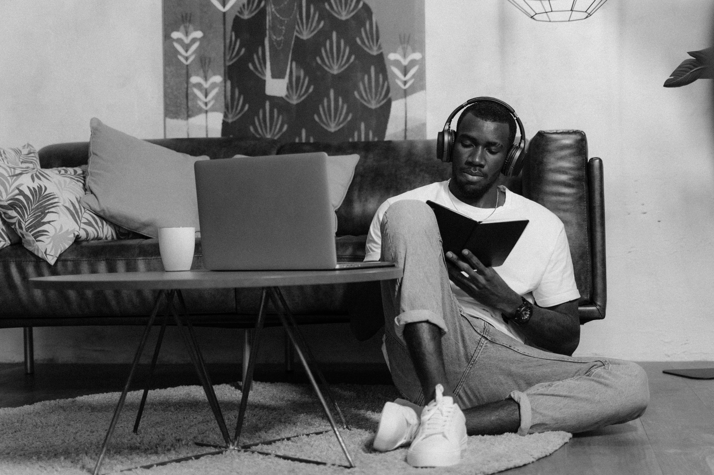

A Place for Ideas That Can Change the Way You Live
Life does not usually change in one dramatic scene. More often, change begins in ordinary moments that nobody else notices. A person wakes up and realises that a habit has been consuming too much time. Someone looks at a financial decision and understands that the consequences will last longer than expected. Another person finally admits that fear has been making choices on their behalf. Someone else decides that waiting for perfect circumstances has become another form of delay.
Mindset & Life is built around those moments. It is a place for examining the ideas, behaviours, experiences and decisions that influence the direction of a human life. The aim is not to present life as simple. People have different backgrounds, responsibilities, opportunities and challenges. A useful idea should therefore encourage honest thinking rather than promise an effortless transformation.
Personal development is sometimes presented as a race in which everyone is expected to become richer, stronger, more successful or more confident every day. Real life is rarely that neat. There are seasons when a person moves quickly and seasons when survival, recovery or patience are the most important achievements available. Understanding that reality can make growth more sustainable.
The subjects explored here include discipline, habits, confidence, purpose, courage, failure, relationships, time, ambition and personal responsibility. They are connected by one simple observation: repeated choices matter. A single decision may not seem powerful, but decisions repeated across months and years can gradually change circumstances.
Mindset & Thinking
The way a person understands an event can influence what they do next. Two people can experience the same disappointment and reach completely different conclusions. One may decide that the experience proves they are incapable. Another may examine what happened and ask what can be learned. The event remains the same, but the response changes the direction that follows.
A useful mindset does not mean pretending that everything is positive. It means being willing to face reality without allowing one painful experience to define an entire future. A failed examination does not reveal the full ability of a student. A rejected application does not determine the value of an applicant. Losing a job does not erase every skill a person has developed.
Clear thinking requires curiosity. People often carry assumptions inherited from family, friends, culture, school or their immediate environment. Some assumptions are helpful. Others become limitations when they are never examined. Asking "Why do I believe this?" can create a valuable pause between an old belief and a new decision.
Thinking carefully also means accepting uncertainty. Not every decision can be made with complete information. Sometimes a person must act with what is available, observe the result and adjust. That approach is very different from waiting for perfect certainty that may never arrive.
Emotions also deserve respect without being given complete control. Anger can highlight a problem, fear can reveal a perceived risk and disappointment can show that something mattered. But an emotion is not always a complete instruction. Learning to pause before responding can prevent temporary feelings from producing permanent consequences.
Discipline
Motivation can be powerful, but it changes. Some days a person feels excited about a goal. Other days the same goal feels distant and difficult. Discipline becomes important because meaningful work cannot depend entirely on enthusiasm.
Discipline is not punishment. It is a practical agreement with yourself about what deserves your attention. A student studies because the examination matters. A worker completes an important task before entertainment. A person saving money decides that not every desire needs an immediate purchase. An athlete trains even when nobody is watching.
Small actions are often more useful than dramatic promises. A person who decides to study for a realistic period every evening may eventually build stronger knowledge than someone who repeatedly creates ambitious schedules and abandons them after a few days.
Discipline also includes returning after failure. Missing one training session does not require abandoning fitness. Spending unnecessarily one week does not mean saving is impossible. Losing concentration for one afternoon does not destroy an entire learning plan.
Why discipline matters
- It turns intentions into repeated behaviour.
- It reduces dependence on temporary motivation.
- It creates reliability.
- It makes long-term goals easier to approach.
- It helps people become more intentional with their time.
- It teaches the value of keeping promises made to yourself.
The strongest form of discipline is often quiet. There may be no applause for going to bed on time, saving a small amount, studying another chapter or refusing a distraction. Yet those choices can become the foundation for larger results.
Habits
A habit may appear insignificant when considered once. Repeated hundreds of times, however, the same behaviour can become a major part of everyday life. This is why ordinary routines deserve attention.
The first hour of the morning, the way someone uses a phone, the food they usually choose, the way they respond to pressure and the people they regularly spend time with can all influence the shape of their days.
Changing a habit becomes easier when the trigger is understood. Someone who continually checks their phone while studying may not simply have a discipline problem. The phone may be within reach, notifications may be arriving constantly and the environment may encourage interruption.
Changing the environment can therefore be useful. Putting the phone away, preparing study materials in advance or creating a particular place for focused work can reduce unnecessary decisions.
Replacement can also help. If someone wants to reduce excessive scrolling, leaving an empty space may not be enough. Reading, walking, writing, learning a skill, training or speaking with someone can provide a more useful alternative.
A habit should also fit the person's actual circumstances. There is little value in copying a routine simply because it looks impressive online. A useful routine is one that can survive normal life, including busy days, limited resources and unexpected responsibilities.
Self-Confidence
Confidence is sometimes mistaken for never feeling nervous. In reality, confident people can experience doubt, embarrassment and uncertainty. The difference is that they do not necessarily allow those feelings to decide everything.
Confidence grows through evidence. Each time a person learns something difficult, keeps a promise, solves a problem or survives an uncomfortable experience, they collect evidence that they can handle challenges.
This is one reason comparison can be destructive. A person may look at somebody else's achievements without seeing the years of work behind them. They may compare their beginning with another person's middle or end.
A more useful comparison is often personal. What can I do now that I could not do six months ago? What decision do I handle better? Which habit has improved? Which mistake would I avoid today?
Confidence also requires accepting the possibility of embarrassment. Almost every skill begins with imperfect attempts. Someone learning public speaking will sound less polished at first. A new business owner will make decisions without having perfect experience. A person learning a sport will make mistakes.
Being willing to be a beginner creates opportunities that perfectionism can close.
Purpose & Direction
Purpose does not always arrive as one dramatic discovery. For many people it grows through experience. A person becomes interested in something, develops a skill, encounters a problem and gradually discovers a direction worth pursuing.
Purpose is also different from status. A respected title may impress other people while providing little personal meaning. A quieter path may be more satisfying if it fits someone's values and responsibilities.
Useful questions include: What kind of work do I respect? What abilities am I willing to develop? Who do I want to help? What problems am I prepared to spend years understanding? What qualities do I want to develop while pursuing my goals?
Direction does not have to remain unchanged. People learn. Responsibilities change. Interests develop. A decision that made sense at one stage of life may need reconsideration later. Changing direction is not automatically failure.
Sometimes changing direction is evidence that a person has become more honest about what they value.
Courage & Fear
Courage is not the absence of fear. Fear often appears precisely because something matters. Applying for an opportunity, beginning a project, speaking honestly or leaving an unhealthy situation can all involve uncertainty.
The danger comes when fear becomes the permanent decision-maker. Avoiding every uncomfortable situation may protect a person from temporary embarrassment while also keeping them away from opportunities.
Courage can be developed gradually. Someone afraid of public speaking can begin with a small group. Someone nervous about difficult conversations can practise expressing smaller disagreements respectfully. Someone afraid of failure can begin with a manageable project.
Courage also includes preparation. Recklessness is not the same thing as bravery. A brave decision can involve researching the situation, understanding risks, asking for advice and creating a sensible plan.
Sometimes courage means walking away. Remaining in a harmful situation simply to prove that you can tolerate it is not necessarily strength. Knowing when to stop can be one of the hardest decisions a person makes.
Failure & Starting Again
Failure can affect more than a plan. It can challenge a person's identity. Someone who has always considered themselves successful may struggle deeply when an important goal collapses.
A useful response is to examine what happened honestly. Was the preparation insufficient? Was the goal unrealistic? Did circumstances change? Was there a warning that was ignored? Which part was actually within the person's control?
Not every failure provides an immediate lesson. Sometimes recovery comes first. Rest, conversation and emotional distance may be necessary before a person can think clearly about the next step.
Starting again does not mean pretending the first attempt never happened. The experience becomes information. The next attempt can be different because the person now understands something they could not have known before.
Failure can also reveal character. It shows how a person behaves when the expected reward disappears. Some people blame everyone around them. Others become curious about what they could improve. The second response does not guarantee success, but it creates a better foundation for another attempt.
Self-Respect & Boundaries
Self-respect involves recognising that your time, attention and dignity have value. It does not require treating other people as less important. Healthy self-respect allows a person to be kind without becoming completely controlled by other people's expectations.
Boundaries are practical expressions of this principle. They may involve saying no, protecting private time, refusing disrespect or deciding what behaviour you will not accept in a relationship.
Saying no can be uncomfortable, especially for people who have learned to measure their worth by pleasing everyone. But agreeing without sincerity can eventually create resentment.
Boundaries also involve responsibility. It is unreasonable to demand respect from others while refusing to respect their limits. Healthy relationships require consideration from both sides.
A boundary is not necessarily an attempt to control another person. It can simply communicate what you are willing to participate in and what you are not willing to accept.
Time & Decisions
Time is different from many resources because it cannot be stored for later. Money can sometimes be earned again after it is spent. Time cannot be recovered.
That does not mean every hour must become productive. Rest, entertainment, friendship and quiet moments have legitimate value. The important question is whether a person is choosing how their time is used or allowing distractions to make every decision for them.
Small choices can become large patterns. An hour spent learning may seem ordinary. Hundreds of such hours can produce expertise. A small unnecessary purchase may appear harmless. Repeated spending can create financial pressure.
Before an important decision, useful questions include: What happens if I repeat this choice? What will it cost? What could it create? What opportunity might I lose? Would I respect this decision if I looked back at it years later?
Thinking about consequences does not remove uncertainty, but it can make decisions more deliberate.
Relationships & People
Personal development does not happen in isolation. The people around us can influence our expectations, habits, emotions and opportunities.
Good relationships require communication. People sometimes expect others to understand feelings that have never been explained. Honest conversations can prevent small misunderstandings from becoming large assumptions.
Friendship also requires balance. A good friend can celebrate another person's progress without feeling threatened by it. They can also offer criticism without using criticism as a way to control someone.
Being a good friend sometimes means telling an uncomfortable truth with genuine care. Constant agreement may feel pleasant, but it does not always help a person grow.
People also change. Some relationships become stronger with time while others become less suitable. Recognising that change can be painful, but keeping every relationship at any cost is not always healthy.
Respect remains important even when relationships end. A chapter can close without turning the entire history into something meaningless.

Personal Growth
Personal growth is often described as constant improvement, but real development is less tidy. There are periods of progress, confusion, rest, mistakes and renewed effort.
A person can improve in one area while struggling in another. Someone may become better with money while still learning how to communicate. Another person may become physically stronger while still developing emotional patience.
Learning is one foundation of growth. Reading, practising, listening, asking questions and studying other people's experiences can expand understanding. Experience adds another layer because it tests whether an idea works outside theory.
Growth also requires self-awareness. It is difficult to improve a weakness that a person refuses to acknowledge. Saying "I handled that badly" can be more valuable than creating an elaborate explanation for why everyone else was responsible.
Improvement becomes sustainable when it connects to identity. Instead of asking only what someone wants to achieve, it can help to ask what qualities they need to develop to handle that achievement responsibly.
Success & Ambition
Ambition can push a person towards meaningful achievements, but ambition without direction can become endless dissatisfaction. There is always another target, another comparison and another person who appears to be ahead.
Healthy ambition needs a definition of success. Someone may want financial security, professional recognition, independence, creative freedom, family stability or the ability to support other people.
These goals are different and require different choices. A person who wants freedom may value flexibility more than status. Someone who wants professional mastery may accept years of training that another person would not choose.
Success should also be examined by its cost. A goal that creates money while destroying every important relationship deserves serious reflection. An achievement that produces status while removing personal freedom may not be the victory it appeared to be.
Ambition becomes stronger when paired with patience. Important results often require years of learning, experimentation and repeated attempts.
Overcoming Difficult Times
Difficult periods can make the future look smaller than it really is. When several problems arrive together, it can become difficult to imagine that circumstances will ever change. A person may begin thinking only about the next problem instead of the wider direction of their life.
During difficult seasons, solving everything at once is rarely realistic. It can be more useful to identify the most urgent problem and deal with that first. Once something becomes manageable, attention can move to the next issue.
Asking for help is also a form of practical strength. Friends, relatives, professionals, teachers, colleagues or community members may offer information or support that one person cannot create alone.
Difficult periods can also teach patience. Not every problem has an immediate solution. Sometimes progress means preventing a situation from becoming worse while waiting for better circumstances.
The important thing is not to confuse a difficult season with an entire identity. A person can be struggling without being a failure. A difficult year does not automatically predict the next ten years.
Choices That Shape Character
Character is often discussed through major events, but everyday behaviour reveals it too. How someone behaves when they have power, how they treat people who cannot offer them anything, whether they keep promises and how they respond after making a mistake all reveal something about their values.
Character is not built through one impressive action. It develops through repeated choices. Honesty becomes meaningful when telling the truth is inconvenient. Responsibility becomes meaningful when blaming someone else would be easier. Patience becomes meaningful when frustration is high.
This does not mean people never make mistakes. Human beings fail. Character can also be seen in what happens after the mistake. Taking responsibility, apologising, repairing damage and changing behaviour can be more valuable than pretending perfection.
The person someone becomes is influenced by the choices they repeatedly accept. That makes ordinary decisions worth taking seriously.
Learning to Live Deliberately
Living deliberately does not mean planning every minute. It means becoming more aware of what deserves attention. A person can have a busy life without having a clear direction.
Deliberate living begins with questions. What matters to me? Which relationships deserve more attention? Which habits are helping? Which behaviours are creating problems? What am I postponing because I am afraid? What would I do differently if I stopped trying to impress everyone?
The answers do not have to be perfect. They can change. The value comes from stopping occasionally and examining whether daily actions still match important values.
A person who wants stronger relationships must eventually give those relationships time. Someone who wants financial stability must eventually make financial choices that support it. Someone who wants knowledge must spend time learning. Goals become real when they influence behaviour.
This is where mindset connects with life. Thoughts influence choices, choices become patterns, and patterns can influence circumstances. There are many forces outside personal control, but there are also areas where deliberate action matters.
The Value of Patience
Modern life can create the impression that every result should happen quickly. People see finished businesses, successful careers, impressive bodies and major achievements without seeing all the ordinary days behind them.
Patience does not mean doing nothing. It means continuing useful action while accepting that some results require time.
A skill can take months or years to develop. Trust can take a long time to build. Financial stability can require repeated careful decisions. A relationship may need many conversations before understanding improves.
Patience becomes easier when progress is measured by actions as well as outcomes. A person cannot always control when the result arrives, but they can often control whether they practise, learn, prepare and continue.
Building a Life That Feels Like Your Own
There is pressure to copy other people's definitions of success. Social media, friends, family and society can create strong expectations about what a successful life should look like.
But a meaningful life cannot be completely borrowed from someone else. Each person has different responsibilities, abilities, opportunities and values.
Building your own life requires deciding what deserves your effort. It may mean choosing a less fashionable career because it fits your strengths. It may mean saving instead of spending to create future security. It may mean protecting family time even when other people measure success differently.
The goal is not to ignore other people's wisdom. Learning from others is valuable. The important part is deciding which lessons actually fit your circumstances.
A life becomes more intentional when actions increasingly reflect personal values rather than constant pressure to impress an audience.
Final Reflection
Mindset and life cannot be separated from ordinary decisions. The way a person thinks influences how they interpret events. Interpretation influences response. Repeated responses become habits, and habits can eventually influence the direction of a life.
None of this means that people control everything that happens to them. Circumstances matter. Opportunity matters. Family, money, education, geography, relationships and unexpected events can all affect what is possible.
But acknowledging circumstances does not require surrendering personal agency. There are still questions worth asking and actions worth taking.
What can I improve? What should I stop doing? What deserves more attention? Which relationship needs care? Which habit is quietly taking me away from the person I want to become? Which opportunity have I avoided because of fear? What would a better decision look like today?
These questions do not produce an instant transformation. They create awareness. Awareness can lead to better decisions, and better decisions become meaningful when they are repeated.
A better life is rarely created by one perfect day. It is built through ordinary days in which a person keeps learning, adjusting, accepting responsibility, protecting what matters and continuing after setbacks.
That is the purpose of Mindset & Life: to create a place for thoughtful ideas that can be examined, questioned and applied to real experiences. Not every idea will fit every person. The value is in reflection. Take what is useful, question what needs questioning and allow experience to become part of the learning process.
The future is not completely predictable. That uncertainty can be frightening, but it can also be encouraging. There are still decisions to make, skills to develop, relationships to strengthen and opportunities that have not yet appeared.
Sometimes the next important step is not a dramatic change. It is simply a better choice made today.